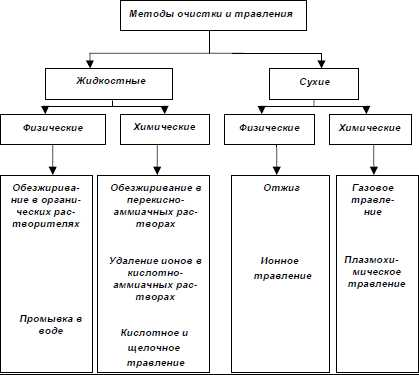
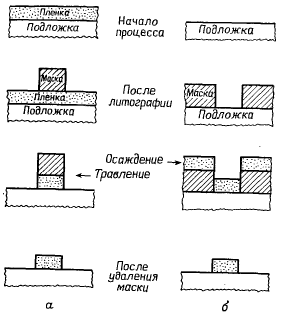
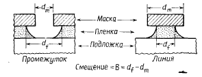
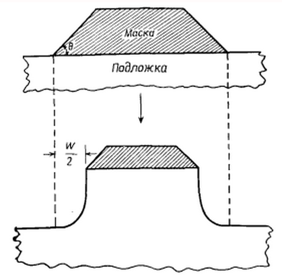
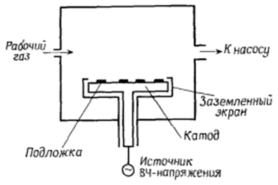
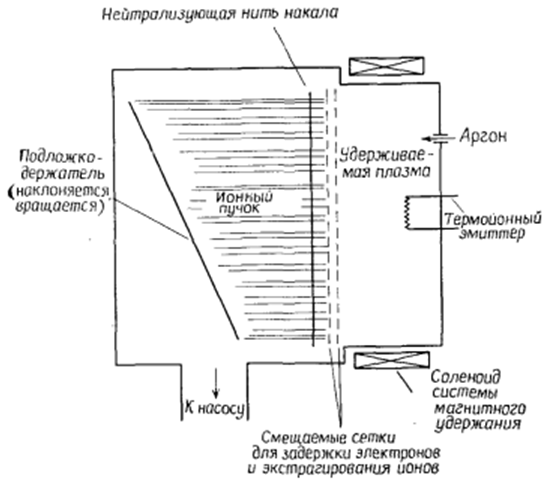
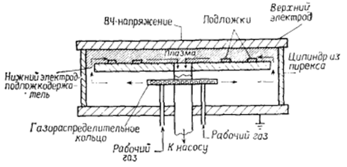
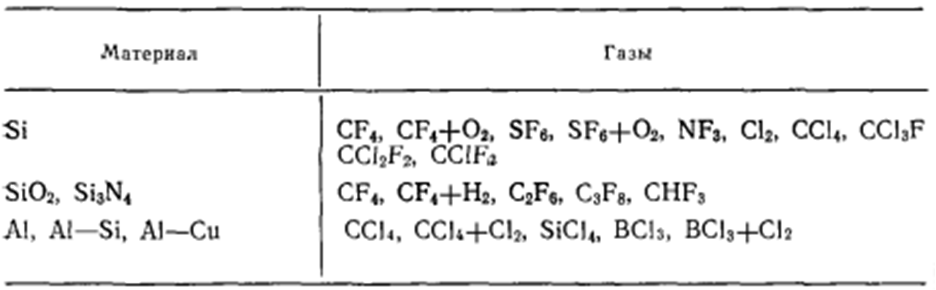
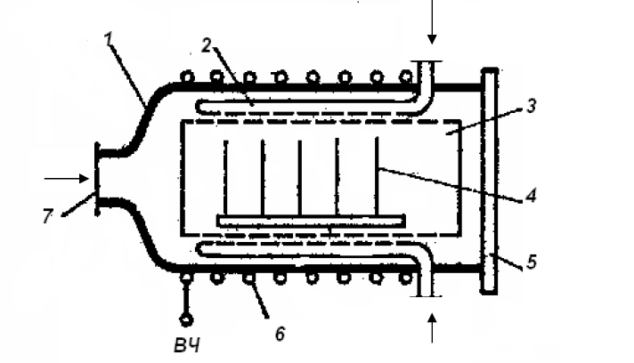
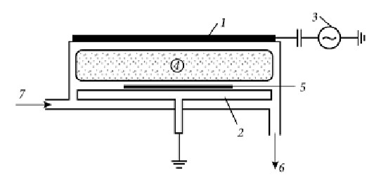

электронный
ресурс по учебной дисциплине 1-58 01 01 - "ИНЖЕНЕРНО-ПСИХОЛОГИЧЕСКОЕ ОБЕСПЕЧЕНИЕ ИНФОРМАЦИОННЫХ ТЕХНОЛОГИЙ"
|
||
| Оглавление | Программа | Теория | Практика| Контроль знаний | Об авторах | ||
|
Содержание
ТЕМА 6 ТРАВЛЕНИЕ ПЛЕНОК § 6.1 Технология травления в растворах и сухого травления. Технологическое оборудование для проведения процессов травления (в растворах и сухого травления) § 6.1 Технология травления в растворах и сухого травления. Технологическое оборудование для проведения процессов травления (в растворах и сухого травления). Химическая обработка поверхности полупроводниковых пластин предшествует операциям технологического процесса изготовления полупроводниковых приборов и ИМС или является их продолжением и подразделяется на очистку и травление. При очистке удаляют загрязнения, при травлении формируют рельеф на рабочей поверхности пластин, удаляют с нее технологические слои и выявляют структурные дефекты полупроводникового материала. В современной технологии кроме химических методов очистки и травления используют физические. Технологически чистой считается поверхность, на которой концентрация примесей не препятствует воспроизводимому получению заданных параметров приборов и ИМС и их стабильности. Для правильного выбора метода очистки необходимо знать, какие загрязнения имеются на поверхности пластин, как их можно удалить, какое влияние они могут оказать на свойства приборов и ИМС и качество последующих операций, а также методы контроля чистоты поверхности. При механической обработке пластин операции очистки проводят 5 раз, а при изготовлении приборов и ИМС на эпитаксиальных структурах со скрытым слоем - более 10 раз. Современные технологические процессы изготовления СБИС состоят из нескольких сотен операций, среди которых почти половина - очистка и травление. Операции травления подразделяют по физическому состоянию используемых реактивов на жидкостные и сухие (газовые). По механизму процессов - на физические и химические (рис. 6.1) и, кроме того, по способам интенсификации процессов, используемым средам, оборудованию, оснастке и др. К физическим методам очистки относят ультразвуковую, смывание загрязнений потоком жидкости, щетками или кистями, сдувание струей газа, бомбардировку ионными и электронными пучками, обработку нонами в плазме, обработку в вакууме или инертных средах при высокой температуре, а к химическим - растворение загрязнений, стравливание загрязнений вместе с тонким приповерхностным слоем полупроводникового материала и т. д.  Рисунок 6.1 – Классификация методов очистки полупроводниковых пластин После механической обработки кристаллическая решетка на поверхности полупроводниковых пластин разрушается, появляются трещины и риски в материале и различные загрязнения. Для удаления нарушенного поверхностного слоя полупроводникового материала применяют химическое травление, протекающее при контакте подложки с жидкой или газообразной средой. Процесс химического травления – это химическая реакция жидкого травителя с материалом пластины с образованием растворимого соединения и последующим его удалением. В технологии полупроводникового производства обычно химическую обработку называют травлением, а химико-динамическую – полирующим травлением. Химическое травление полупроводниковых материалов проводят для того, чтобы удалить нарушенный слой. Оно характеризуется повышенной скоростью травления в местах нарушения кристаллической структуры. При химико-динамическом травлении удаляют более тонкие слои, так как его назначение – создать на пластине гладкую поверхность высокого класса чистоты. Состав травителя подбирают так, чтобы полностью подавить его способность к селективному травлению. Процессы химической обработки сильно зависят от температуры, концентрации и чистоты реактивов. Поэтому при проектировании оборудования для химической обработки стремятся стабилизировать основные параметры процесса, и этим гарантировать высокое качество травления. Материалы, применяемые для изготовления рабочих камер, должны быть стойкими к используемым реактивам, а применяемые средства автоматизации – либо малочувствительными (например, пневмо- или гидроавтоматика), либо хорошо защищенными от воздействия паров агрессивных реактивов (в случае применения электроавтоматики). Особенности методов жидкостной очистки полупроводниковых пластин от различных загрязнений приведены в табл. 6.1. Таблица 6.1 – Методы жидкостной очистки полупроводниковых пластин
Перенос рисунка. Термин «перенос рисунка» относится к переводу рисунка, созданного маскирующим слоем, на пленку или подложку с использованием химических или физических методов, обеспечивающих формирование поверхностного рельефа. Субтрактивные и аддитивные методы переноса рисунка. Субтрактивный метод переноса рисунка (рис. 6.2, а) заключается в осаждении пленки, литографическом покрытии ее маскирующим слоем с рисунком и удалении травлением немаскированных участков плёнки. При аддитивном методе, или методе взрывного удаления (рис. 6.2, б) вначале на подложку наносится литографическая маска, затем на маску и не защищенные ею участки подложки осаждается пленка, после чего участки пленки, покрывающие маску, удаляются путем селективного растворения маскирующего слоя в подходящем жидком растворителе, так что пленка, покрывающая маску, может быть поднята и удалена с поверхности подложки.  Рисунок 6.2 – Схемы субтрактивного (а) и аддитивного методов переноса рисунка Применение субтрактивных методов является предпочтительным для современной технологии СБИС способом переноса рисунка. Аддитивные методы способны обеспечить высокое разрешение, но используются редко. Разрешение и профили краев элементов при субтрактивном переносе рисунка. Разрешение, достигаемое в результате процесса травления, является критерием качества переноса рисунка и определяется двумя параметрами. Первый из них — смещение, равное разности горизонтальных размеров маски dm (рис. 6.3). Допуск является мерой статистического распределения величин смещения, которая характеризует однородность травления в горизонтальной плоскости.  Рисунок 6.3 – Боковой подтрав пленки под маску на границе – маска-пленка Процесс травления с нулевым смещением обеспечивает формирование вертикального профиля края элемента, совпадающего с краем маски (рис. 6.4,а). В этом случае травления в горизонтальном направлении не происходит и рисунок переносится с идеальной точностью, что соответствует экстремальной ситуации идеально анизотропного травления. При равенстве вертикальной и горизонтальной скоростей травления или, выражаясь более точно, когда скорость травления не зависит от направления, к концу процесса формируется профиль края, имеющий контур четверти окружности (рис. 6.4,б). В этом случае, т. е. при изотропном травлении, смещение равно удвоенной толщине пленки, подвергавшейся травлению.
Рисунок 6.4 – Идеальные профили травления для а – полностью анизотропного (Аf=1) и б – изотропного (Аf=0) травления при отсутствии подтрава маски Любой профиль края элемента, формируемый к концу травления, который соответствует ситуации, промежуточной между теми, что показаны на рис. 6.4, а и б, образуется вследствие анизотропии скорости травления. Селективность и контроль размеров элементов. При описании травления пленки подразумевалось, что подложка и маска не поддавались воздействию травителя. На практике такое случается редко, особенно при использовании методов сухого травления. Чаще все материалы, контактирующие с травителем, характеризуются конечными значениями скорости травления. Следовательно, важным параметром переноса изображений в технологии СБИС является селективность (избирательность) травления, определяемая как отношение скоростей травления различных материалов. Селективность по отношению к материалу резиста необходимо учитывать при контроле размеров формируемых элементов. Селективность по отношению к материалу подложки определяет качество и процент выхода годных приборов (подложкой считается либо кремниевая пластина, либо пленка, выращенная или осажденная в процессе создания предыдущего слоя полупроводниковой структуры). Селективность по отношению к материалу подложки зависит от однородности скорости травления как пленки, так и маски, однородности толщины пленки, степени перетравливания, профиля края элемента маски, анизотропии скорости травления маски и максимального допустимого ухода размеров вытравливаемого элемента. Для количественной оценки влияния этих факторов рассмотрим рис. 6.5.  Рисунок 6.5 – Формирование контура вытравливаемого элемента с учетом конечной сорости травления маски (разность между расчетной и реальной шириной линии равноа W) Методы сухого (плазменного) травления. Сухая очистка, как правило, является финишной, так как выполняется непосредственно перед проведением последующих технологических процессов, например, перед нанесением пленок, оксидированием, фотолитографией. Методы сухой очистки можно условно разделить на физические и химические. При физических методах загрязнения удаляют отжигом и ионным распылением (травлением). При химических методах загрязнения, находящиеся на поверхности, переводят в новые химические соединения, а затем удаляют. Очистку, сопровождаемую удалением поверхностного слоя подложки, принято называть травлением. Методы переноса рисунка с использованием плазменного травления предусматривают применение частично ионизированных газов, состоящих из ионов, электронов и нейтронов, которые образуются при электрических разрядах в газе при низком давлении (~0,0133—1330 Па). Общий термин «плазменное травление» включает методы ионно-лучевого травления, ионноплазменного травления, реактивного ионно-лучевого травления, реактивного ионно-плазменного травления и собственно плазменного травления. Плазменное травление может осуществляться различными методами. При использовании методов ионного травления, включающего ионно-лучевое и ионно-плазменное травление, процесс травления происходит исключительно по механизму физического распыления. Реактивные методы, включающие собственно плазменное травление, реактивное ионно-лучевое травление и реактивное ионно-плазменное травление, основаны на различной степени сочетаний химических реакций, в ходе которых образуются летучие или квазилетучие соединения, и физических взаимодействий, таких, как ионная бомбардировка. Термин «плазменное травление» часто применяется для обозначения чисто химических реакций, в которых плазма служит исключительно источником реакционно-способных электрически нейтральных компонент, вступающих во взаимодействие с атомами повёрхности твердого тела, в результате чего образуются летучие продукты реакций. Известны примеры применения плазменного травления в технологии СБИС, для которых данное определение является полностью адекватным. Однако физические эффекты, такие, как ионная бомбардировка, часто играют важную роль в плазменном травлении, так же как и в реактивном ионном травлении. Поэтому следует быть осторожным при определении «механизма» конкретного процесса травления, основанного на терминологии, используемой для описания этого процесса. Предпочтительно разделять методы сухого травления не по механизму, а по функциональным признакам, т. е. присущим им комбинациям функциональных параметров. Ионно-плазменное и ионно-лучевое травление. Как ионно-плазменное, так и ионно-лучевое травление основаны на использовании образующихся в процессе разряда высокоэнергетических (≥500 эВ) ионов инертного газа, например Аг+. Ионно-плазменное травление проще всего осуществить в высокочастотной диодной системе, схема которой представлена на рис. 6.6. Материал, подвергаемый травлению, закрепляется на запитываемом электроде и бомбардируется притягиваемыми из плазмы ионами.  Рисунок 6.6 – Высокочастотная диодная система для реактивного ионного травления В методе ионно-лучевого травления источником ионов обычно является разряд постоянного тока, ограничиваемый магнитным полем, причем область разряда физически отделена от стравливаемой подложки системой сеток (электродов), на которые подаются потенциалы смещения, обеспечивающие экстрагирование ионного пучка (обычно Аr+) из разряда (рис. 6.10). Для обеспечения используемых на практике плотностей тока пучка (≤1 мА/см2) требуется прикладывать напряжение (сообщать ионам энергию) свыше 500 В. Обычно пучок хорошо коллимирован, поэтому угол его падения на поверхность подложки можно регулировать наклоном подложкодержателя. Для нейтрализации ионного пучка на его пути размещается разогреваемая нить накала, инжектирующая в пучок электроны низких энергий.  Рисунок 6.7 – Система для ионно-лучевого травления Хотя и ионно-плазменное, и ионно-лучевое травление обеспечивают в потенциале высокое разрешение, они не получили широкого применения в технологии СБИС. Основной причиной этого является неудовлетворительная селективность. Плазменное травление. Для плазменного травления кремния, его соединений и некоторых металлов применяют молекулярные газы, содержащие один или более атомов галогенов в своих молекулах. Выбор таких газов объясняется тем, что образуемые ими в плазме элементы реагируют с материалами, подвергаемыми травлению, образуя летучие соединения при температурах, достаточно низких, чтобы обеспечить качественный перенос рисунка. Для травления с высоким разрешением используются реакторы с электродами в виде параллельных пластин (рис. 6.8). Такие системы имеют ряд отличительных характеристик. Во-первых, электроды почти симметричны (отношение площадей запитываемой и заземленной поверхностей значительно ближе к единице, чем в системах ионно-плазменного и реактивного ионного травления). Уровень удержания плазмы относительно высок, поскольку электроды расположены близко друг к другу и имеют размеры в плоскости, соизмеримые с диаметром внутренней полости реактора. Удержание плазмы обеспечивает повышение ее потенциала. Другими отличительными характеристиками являются размещение подвергаемых травлению подложек на заземленном электроде и относительно высокое рабочее давление (от 13,3 до 1330 Па).  Рисунок 6.8 – Система плазменного травления с параллельными электродами в виде пластин (плазма удерживается в основном в области между запитываемым электродом и заземленной пластиной подложкожержателя) Вероятность обеспечения высокого потенциала плазмы в системах плазменного травления не следует переоценивать. Поскольку подложки либо заземлены, либо находятся под плавающим потенциалом, энергия падающих на них ионов может быть равна потенциалу плазмы или немного превышать его и при определенных условиях может достичь нескольких сотен вольт, несмотря на высокое рабочее давление. При высоком потенциале плазмы поверхностные реакции, определяющие процесс травления, сильно зависят от эффекта ионной бомбардировки. В этом случае плазменное травление не отличается по механизму от реактивного ионного травления. Обычно для осуществления плазменного травления требуется лишь механический насос. Широко применяются двухкамерные роторные насосы с масляными ловушками, обеспечивающие скорость откачки до 1500 л/мин. Поскольку даже при использовании относительно инертных рабочих газов в процессе разряда могут образовываться химически агрессивные и (или) токсичные газы, например СО, COF2, СОСl2, F2 и С12, необходимо предусматривать меры безопасности при вентилировании насоса, замене в нем масла и повседневном техническом обслуживании. Поскольку необходимо осуществлять независимое управление давлением и скоростью подачи рабочего газа, для регулирования скорости откачки применяют дроссельную заслонку. Значения скорости подачи газа обычно лежат в интервале 50— 500 см3/мин при стандартных температуре и давлении. Подача высокочастотного напряжения часто осуществляется посредством цепей с регулируемым импедансом при частоте 13,56 МГц. Однако недавно проведенные исследования влияния частоты на характеристики процесса травления показали важность этого параметра, определяющего энергию ионов, что привело к заключению о целесообразности отклонения от стандартной частоты. Цепи регулировки применяются для согласования импеданса плазмы с выходным импедансом высокочастотного генератора, что обеспечивает эффективную передачу энергии. Реактивное ионное и реактивное ионно-лучевое травление. Реактивное ионное травление, называемое также реактивным ионно-плазменным травлением, осуществляется в реакторах, аналогичных применяемым для ионно-плазменного травления (рис. 6.9). Однако в реактивном ионном травлении вместо плазмы инертного газа используется разряд в молекулярных газах аналогично тому, как это осуществляется при плазменном травлении. Особенностями метода являются: 1) асимметричные электроды (т. е. отношение площади катода к площади заземленной поверхности намного меньше 1); 2) размещение подложек на запитываемом электроде; 3) относительно низкие рабочие давления (0,133—13,3 Па). Каждая из перечисленных особенностей метода обусловливает относительно высокую энергию ионов, бомбардирующих поверхность подложки в процессе травления. Низкие рабочие давления, используемые при реактивном ионном травлении, приводят к необходимости применения более сложных насосных систем и низких скоростей подачи рабочего газа (~10—100 см3/мин при стандартных температуре и давлении). В остальном системы реактивного ионного травления сходны с реакторами для плазменного травления с параллельным расположением электродов. Реактивное ионно-лучевое травление — самый современный из разработанных методов реактивного травления. Применяемое при этом оборудование сходно с установкой, используемой при ионно-лучевом травлении. Аналогичными являются и рабочие характеристики. Однако вместо инертных газов источником ионов служат молекулярные газы — так же, как в методах плазменного и реактивного ионного травления. Хотя первые результаты применения реактивного ионно-лучевого травления показали возможность достижения весьма высокого уровня анизотропии травления (Af=l), селективность травления весьма низка. Учитывая необходимость использования сложного оборудования для реализации этого метода, потенциальные недостатки последнего, а также трудности в создании ионных источников, следует полагать, что метод реактивного ионно-лучевого травления в ближайшем будущем вряд ли найдет широкое применение. Состав рабочего газа. Состав рабочего газа — доминирующий фактор, определяющий скорость травления и селективность при плазменном и реактивном ионном травлении. В табл. 6.2 представлены обычно используемые для травления газы и материалы, подвергаемые травлению в соответствующих газовых разрядах. Для процессов травления в технологии СБИС применяются почти исключительно галогенсодержащие газы, за исключением процессов, связанных с удалением фоторезиста и переносом рисунков в органические слои, когда используют плазму О2. Выбор этих газов отражает тот факт, что образование применяемыми для изготовления СБИС материалами летучих и квазилетучих соединений с галогенами термодинамическими и кинетически возможно при температурах, близких к комнатной. Преимущественное присутствие в табл. 6.2 галогенуглеродных газов объясняется тем, что эти газы наиболее удобны и безопасны в работе. Таблица 6.2 – Некоторые газы, применяемые для сухого травления в технологии СБИС  Для реактивного травления часто применяют многокомпонентные смеси, представляющие собой обычно главную компоненту с одной или более добавками, которые вводятся для обеспечения наряду с требуемой скоростью травления других заданных характеристик: селективности, однородности, профиля края. Примером влияния таких добавок на скорость травления служит плазменное травление Si и SiО2 в смесях, содержащих CF4. Давление, плотность мощности и частота. Давление газа, плотность мощности и частота прикладываемого электрического поля — независимые параметры, но на практике индивидуальное влияние каждого из них на процесс травления иногда трудно объяснить или предсказать. Однако являются очевидными несколько общих тенденций. Понижение давления и (или) частоты и повышение плотности мощности приводят к увеличению средней энергии электронов и энергии падающих на подвергаемую травлению поверхность ионов. Повышение плотности мощности вызывает также повышение плотности радикалов и ионов в плазме. Таким образом, в процессах ионно-стимулируемого травления путем уменьшения давления и частоты или увеличения мощности можно повысить степень анизотропии скорости травления. Как правило, с увеличением мощности скорость травления монотонно возрастает, хотя темп приращения замедляется. Почти вся прикладываемая мощность в конечном счете рассеивается в виде тепла, поэтому при обеспечении очень большой плотности мощности электрического поля необходимо предусматривать охлаждение подложек во избежание нежелательных последствий нагрева, таких, как плавление и подгорание фоторезиста или потеря селективности травления. В последние годы исследователи проявляют большой интерес к сверхскоростному травлению в реакторах, рассчитанных на индивидуальную обработку пластин. Такие системы работают при относительно высоком давлении и очень большой плотности мощности (несколько Вт/см2). Плазмохимическое травление проводится в установках, имеющих реакторы с объемным расположением подложек (рис. 6.12) и в реакторах диодного типа при давлении газа, не позволяющем ионам достигнуть энергии, достаточной для распыления поверхности очищаемой подложки (Ен < 1,6 •10-17Дж). Рабочий газ подают в реактор, где его молекулы под действием электронов плазмы диссоциируют на химически активные частицы (радикалы и атомы). Радикалы и атомы вступают в химическую реакцию с поверхностными загрязнениями и образуют летучие соединения, которые удаляют из реактора откачной вакуумной системой. Существует два вида реакторов с объемным расположением подложек: с перфорированным металлическим экраном, предотвращающим попадание заряженных частиц на подложку, и без экрана. Экран улучшает равномерность очистки. Электронная и ионная бомбардировка ускоряют химическую реакцию на поверхности, т. е. процесс очистки.  1 – кварцевый реактор; 2 – коллектор для подачи газа; 3 – металлический перфорированный цилиндр; 4 – обрабатываемые подложки; 5 – крышка; 6 – индуктор; 7 – патрубок Рисунок 6.9 – Установки плазмохимического травления с объемным расположением подложек в реакторе Благодаря электрической активности газов с образованием реакционноспособных радикалов плазмохимическое травление можно проводить при существенно меньших температурах (100-300°С) по сравнению с обычным газовым травлением н удалять такие загрязнения, которые не поддаются газовому травлению. Газовое травление чаще всего используют в эпитаксиальных установках для очистки подложек перед выращиванием на них полупроводниковых слоев. На рис. 6.10 представлена схема реактора промышленной установки плазмохимического травления 08ПХО-125/50-008 с индивидуальной обработкой пластин.  1 — ВЧ-электрод; 2 — электрод- под лож ко держатель; 3 — ВЧ-генератор; 4 — область плазмы; 5 — рабочая пластина; 6 — к системе откачки; 7 — газоввод Рисунок 6.10 – Схематичное изображение плазменного реактора:
|
| (С) БГУИР |